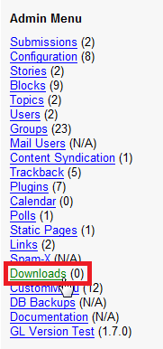
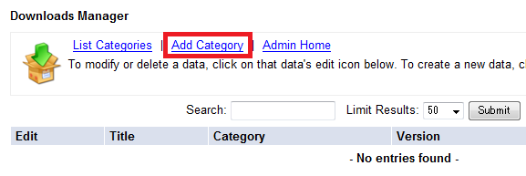
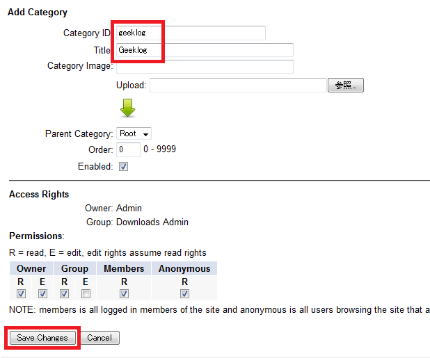
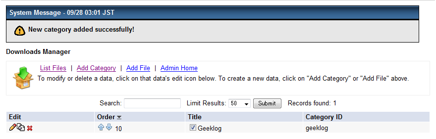
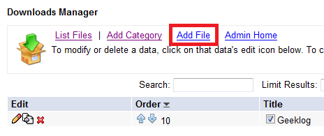
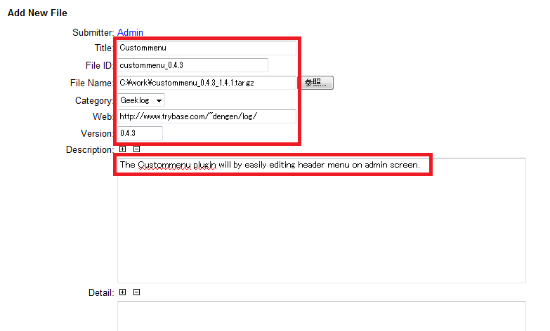
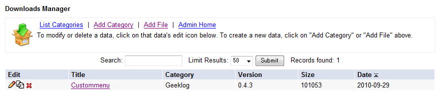
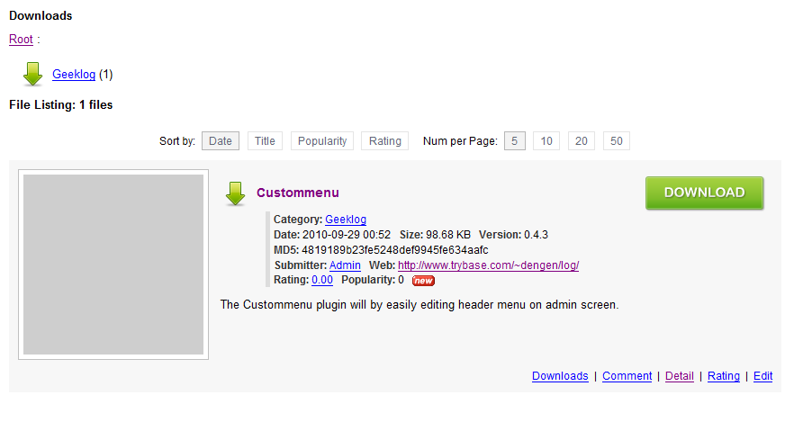

To install, create some directories for Downloads plugin manually, you must copy some files to the appropriate directory.
In the following descriptions
Downloads plugin provides script to receive the data from Filemgmt plugin.
Login your site with Root user permission, access to http://your_site/admin/plugins/downloads/fm2dm.php . And, please follow the instructions.
Let's use Downloads plugin.








Hereunder are items to be edited at category manager.
| Item | Desctription |
|---|---|
| Category ID | Set category ID here. Alphabet, numerics, hyphen, under score are allowed. ID duplication is not allowed. If your Geeklog site is operated by multi-language mode, language ID should be added on category ID. (ex:cat_en, cat_ja ...) |
| Title | Set category title here. |
| Category Image | Set category icon's file name here. You can upload new category icon image file by clicking 'Upload' button. |
| Parent Category | Select upper layer category. |
| Order | Set display order at category list here. Value here is to be adjusted to decimal order by Geeklog. |
| Enabled | Switch each category's status enabled/disabled. If disabled, files & categories belong to do not display at downloads section of your Geeklog site. |
Hereunder are items to be edited at downloads manager.
| Item | Desctription |
|---|---|
| Submitter | Who submitted the file is automatically set here. |
| Title | Set the file's title here. |
| File ID | Set the file's ID here. Alphabet, numerics, hyphen, under score are allowed. ID duplication is not allowed. |
| File Name | Set the file's name here. Replacing file is available by click 'Upload'. |
| Category | Choose a category you wish the file belongs to. |
| Tag | Set the tag list separated by a space character. In order to enable the tag, install the Tag plugin(Ver 0.6.0 or later) that is released by mystral-kk. |
| Web | Describe URLs such as the one of the submitter's web. Geeklog provides user's web URL. |
| Version | Set the file's version here. |
| File Size | The file's size is described automatically here. |
| MD5 Checksum | The file's MD5 value is described automatically here. |
| Description | Describe the file's description here. Simple one is recommended. HTML is acceptable when post mode is [HTML] or[advanced editor]. |
| Detail | Describe details of the file. HTML is acceptable when post mode is [HTML] or [advanced editor]. |
| Post Mode | Chosse post mode of description and details. [text] : plain text [HTML] : HTML text [advanced editor] : edit HTML text by advanced editor [Wiki text] : Wiki text |
| File Image | Set file name of snapshot image. New file upload is available by clicking 'Upload' button. |
| MG Autotag | Set Autotag of Media Gallery. Once MG Autotags is set, a file image (snapshot) is replaced by the one created by MG Autotags. This item appears when 'MG Autotag' is enabled at Geeklog's configuration. |
| Comment Mode | Choose comment actions [Comments Enabled] : allow comment submit [Comments Disabled] : disallow comment submit [Comment Closed] : close comment features |
| Released | Select if the file & its information make it in public. [YES] : make it in public (accessable) [NO] : not to make it in public (access unavailable) |
| Include Files on List | Select if the file's download information is displayed on the list, ie numbers of downloads etc. [YES] : download information not displayed [NO] : download information is displayed This selection is not to be effected by the previous item 'Released'. |
| Release Date | Set download information's release date If future date is set, the file does not to be in public before the date. |
| Project Name | Descript project name of the download file. |
Downloads plugin is cofigurable at Geeklog's Admin Menu - Configuration - Downloads.
| Variable | Default Value | Desctription |
|---|---|---|
| Downloads Login Required (loginrequired) |
False(0) | Set True(1) makes login user only accesabile to download section. More priority than this is set for value at 'Login Required?(loginrequired)' at Configuration - Geeklog - Users and Submissions. |
| Hide Downloads Menu Entry (hidemenu) |
False(0) | Set True(1) makes no display of 'download' at site menu. |
| Delete Downloads with Owner (delete_download) |
False(0) | Set True(1) makes delete all dowload information owned by a user when the user's account was deleted. Set False(0) makes pass the information to a user belongs to root group such as site admin. |
| Downloads per Page (download_perpage) |
5 | Set numbers of download information per page. |
| Popularity Threshold of Hits (download_popular) |
20 | Display 'pop' icon when downloads numbers exceeds this value. |
| Allow Login Users to Upload (download_uploadselect) |
False(0) | Set True(1) makes login users upload files. Set False(0) makes 'downloads.upload' users only upload files. |
| Email Notification Allowing (download_emailoption) |
True(1) | Set True(1) makes email advise on file approval by admin. |
| File Permissions (filepermissions) |
755 | Set upload file permission by three digits. |
| Default Post Mode (postmode) |
Plain Old Text(plaintext) | Set default submission mode of download file's description & details. 'Plain Old Text(plaintext)' : Plain old text 'HTML Formatted(html)' : HTML Formatted text |
| Enabled MG Autotag (enabled_mg_autotag) |
False(0) | Set True(1) makes MG autotags enabled. It makes Media Gallery plugin's image files and album file images(snapshots). |
| Variable | Default Value | Desctription |
|---|---|---|
| Show Thumbnail Image (show_tn_image) |
True(1) | Set False(0) makes thumnail of the file image (snapshot) not display. Instead, displays a link icon to the file image. |
| Show Only Image Exists (show_tn_only_exists) |
False(0) | Set True(1) makes thumnail display only in case a file image (snapshot) is registered. |
| Max Width (max_tnimage_width) |
200 | Set max width of thumnail. |
| Max Height (max_tnimage_height) |
200 | Set max length of thumnail. |
| Format (tnimage_format) |
PNG(png) | Set file compression format of thumnail. JPEG(jpeg) : JPEG format PNG(png) : PNG format |
| Variable | Default Value | Desctription |
|---|---|---|
| Show Category Images (download_useshots) |
True(1) | SetFalse(0) makes not to display category images. |
| Category Image Width (download_shotwidth) |
32 | Set category image width. |
| Variable | Default Value | Desctription |
|---|---|---|
| Show New Downloads (download_whatsnew) |
True(1) | Set False(0) makes not to display new downloads information at whatsnew block. |
| Max Number of New Downloads (download_newdownloads) |
10 | Set max number of new downloads to show at whatsnew block. |
| New Downloads Interval Date (whatsnew_perioddays) |
14 | Set how long to make it as 'new downloads' and show at whatsnew blcok. unit:day |
| Variable | Default Value | Desctription |
|---|---|---|
| Downloads History Permissions (download_dlreport) |
Downloads Editor(editor) | Set what kinds of user can see downloads history. 'Downloads Editor(editor)' : allow 'downloads.editor' users only. 'All(all)' : allow all users. 'Login User(user)' : allow login users only. |
| Cut Owner's Own Download (cut_own_download) |
True(1) | Set False(0) makes not to record to download history even a file owner downloads. |
| Variable | Default Value | Desctription |
|---|---|---|
| Download File (path_filestore) |
<public_html>/downloads_data/files/ | Set repository path to store download files. You can set it at non-public area in case you consider file security. |
| Download File Snapshot (path_snapstore) |
<public_html>/downloads_data/snaps/ | Set repository path to store file images. Non-public area is not allowed. Make sure to set public area. |
| Category Image (path_snapcat) |
<public_html>/downloads_data/category_snaps/ | Set repository path to store category images. Non-public area is not allowed. Make sure to set public area. |
| Thumbnail Image (path_tnstore) |
<public_html>/downloads_data/tn/ | Set repository path to store thumnail images. Non-public area is not allowed. Make sure to set public area. |
| Variable | Default Value | Desctription |
|---|---|---|
| Download File Snapshot (snapstore_url) |
http://your_site/downloads_data/snaps | Set repository URL to store file images. |
| Category Image (snapcat_url) |
http://your_site/downloads_data/category_snaps | Set repository URL to store category images. |
| Thumbnail Image (tnstore_url) |
http://your_site/downloads_data/tn | Set repository URL to store thumnail images. |
| Variable | Default Value | Desctription |
|---|---|---|
| Default Permissions[0] | Read-Write | Set owner's permission. This value becomes default at creating category. |
| Default Permissions[1] | Read-Only | Set group's permission. This value becomes default at creating category. |
| Default Permissions[2] | Read-Only | Set member's permission. This value becomes default at creating category. |
| Default Permissions[3] | Read-Only | Set gues's permissio. This value becomes default at creating category. |
Downloads Plugin supports Geeklog's multi-language features.
Downloads plugin uses a method to add language ID at suffix of category ID.
For details of multi-language support, please see the following WIKI pages.
The following is an example to use at English and Japanese.
plugin_en
plugin_jaAutotag for a link to a download information is available for articles and staticpages etc.
Tag format: [download:Download ID]
Ex: [download:custommenu_0.4.3]
| Version | Published | Description |
|---|---|---|
| 1.2.0 | 2014.9.27 | * Supported Geeklog 2.1.0. * Dropped support for Geeklog 1.7.2 or earlier. * Enabled the CKEditor and Timepicker for editing with Geeklog 2.1.0 or older. * Added the preview feature in the downloads info editor with restrictions. |
| 1.1.0 | 2013.4.7 | * Supported Geeklog 2.0.0. * Changed the template and style sheet to fit the Denim theme that supports responsive Web design. * Now possible to put tags to download information in cooperation with Tag plugin(Ver 0.6.0 or later). |
| 1.0.4 | 2011.9.28 | * Fixed issue that could not select an access rights group from list. * Security policy was changed. Now, category management rights are owned by the root users only. |
| 1.0.3 | 2011.3.6 | * Fixed bug in the category select-box display on multi-language mode. * Fixed issue errors may occur when creating a category. * Fixed bug with link to download content from comment page. |
| 1.0.2 | 2010.10.6 | Fix of Version 1.0.1 was not enough, so fixed more. |
| 1.0.1 | 2010.10.5 | Fixed failure to specific name images or GIF format images conversion of fm2dm data converter. |
| 1.0.0 | 2010.10.3 | Initial version |